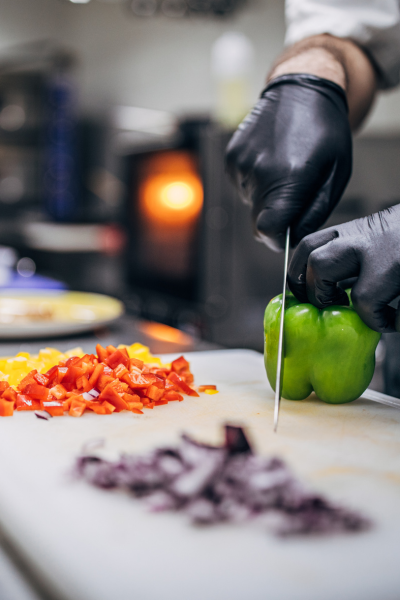
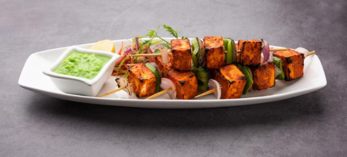

We know what you expect from us
Since 3 years Shivshakti Restaurant has been represented on the highly-regarded list and is a testament to the team’s commitment to continually raise the bar of fine dining experiences for guests
Explore Our Menu

Best Restaurant in Pune

Proud to Serve Foods
No wonder, food lovers from far and wide insist on bringing their families & friends over for a mouth-watering cuisine and charming service. We also serve the food of your taste at your comfort, for you to enjoy with your family and friends at your space, with our free home delivery service. You can plan your meet and celebrations with Shivshakti. You can reserve a table if you can, book online, by phone or just walk in.Our proficient staff will treat you with utmost courteousness, genuine care and humble heedfulness as you eat and enjoy the feast. The space is designed to your comfort and we have a dedicated corner for kids, where they can have fun, sliding and swinging.